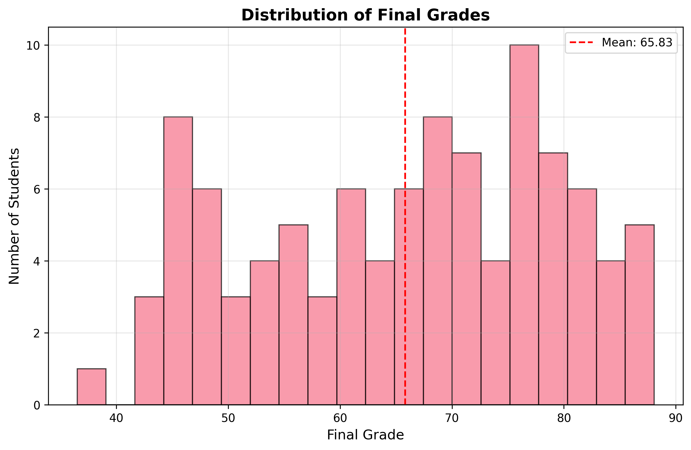
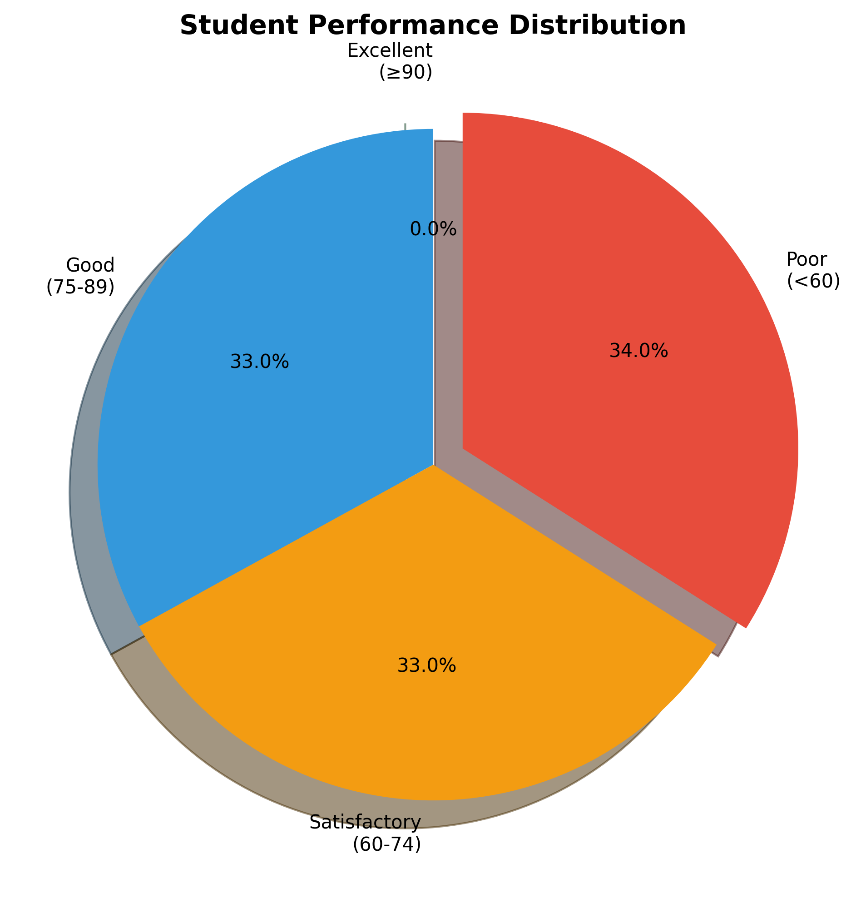
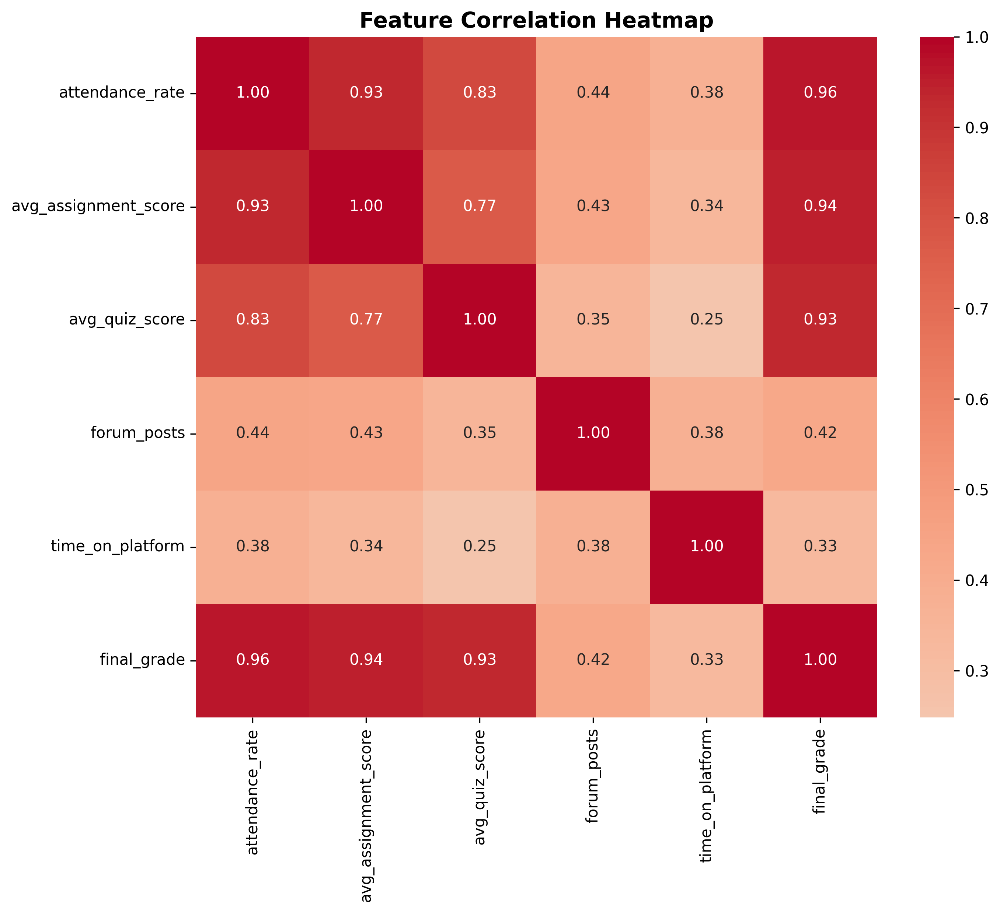
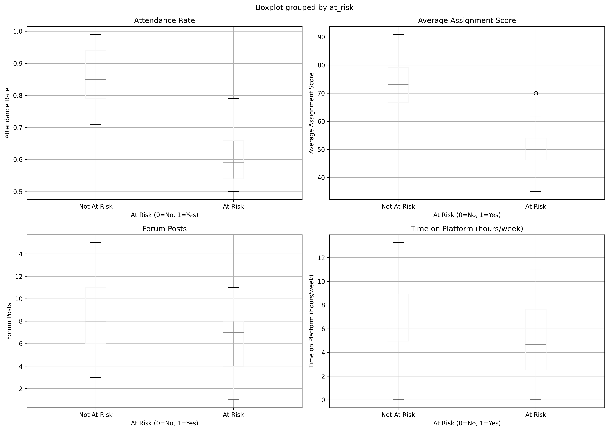

📊 Student Performance Analytics Report
📈 Overview
This report provides comprehensive analytics on student performance, including risk assessment, performance distribution, and predictive insights using machine learning.
Total Students
100
Average Grade
65.8
At-Risk Students
37
Avg Attendance
76%
📊 Grade Distribution

📈 Performance Categories

🔗 Feature Correlations

⚠️ At-Risk Analysis

🤖 ML Model Feature Importance

💡 Insights & Recommendations
Key Findings:
- Attendance Matters: Strong correlation between attendance and final grades
- Early Intervention: Students with low early assignment scores are at higher risk
- Engagement Impact: Forum participation correlates with better performance
- Time on Platform: Study time is a significant predictor of success
Recommendations:
- Focus intervention efforts on students with <70% attendance
- Monitor assignment scores early in the semester
- Encourage forum participation through engagement activities
- Provide additional support for students identified as at-risk